RMF Systems Engineering Handbook
Project Home Page
What is RMF@TRL?
What is RMF@TRL?
RMF@TRL is a joint project by S&TPPO and GovTech, contributed by external collaborators: TBD
We are going to incorporate RMF into all the robots and facilities in TRL (Tampinies Regional Library). Along with that we aim to have a standardized safety standard for robots in the RMF ecosystem.
Our mission and objectives
Our mission
To standardize robot testing uniformly throughout the robotcs industry through varied real-life projects showcased here.
Our Objectives
We wish to establish the following:
- Requirements and guidelines for
- Robot to Robot Interactions
- Robot to People Interactions
- Robot to Facilities (E.g. Doors, lifts, wireless charging docks) Interactions and Integrations
- A sandbox for further studies
- Vendor interoperability, vendor work relationships
- Asset ownership (ie: Lift/door PLC devices)
- Technical standards, validate standard interfaces
- Operational safety and reliability concerns
- Policy considerations
Objectives -> Outcomes
Requirements:
- Operational Safety & reliability
- Standard interfaces validation
- User experience
Test Centric Approach:
- Nominal case testing
- corner case testing (Randomized testing)
- Exceptional case handling (SIS)
Readiness Assessment:
- Remote/Unsupervised operations
- "Many AMRs to One operator" operations
- Increased AMR operations frequencies
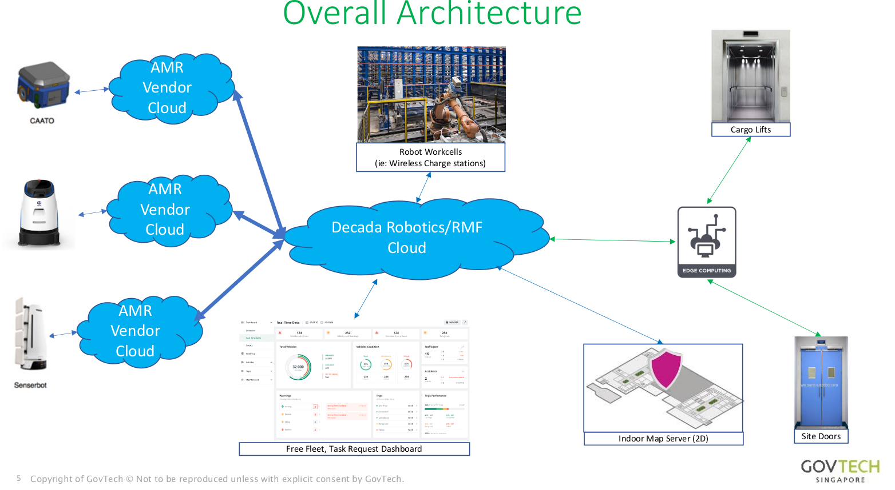
Our partners and contributors

Current Status
-
Contractual matters
- ITT documents published, awaiting evaluation (Mar 2022)
- Direct contract awarded to Fujitec cargo lift (Mar +3mths)
- AWS GCC cloud service setup
-
Site Assessments
- Cargo lift assessment completed – lift gap considerations, integration with Fujitec
- Door assessments completed – Fire safety, security company (Bosch), 3 possible approaches
-
Design Efforts / Documentations
- RMF Safety Instrumented System (SIS)
-
Current Developmental efforts
- RMF hosted on AWS GCC; integrated with Caato
- TRL levels 2-6 physically mapped, simulation and standalone scenarios done
- Caato 2.0 built, I2R navigation stack installed and working
- Network wiring arrangements (by NLB-TRL) underway
-
Staging of Component Purchases
- 1x Xnergy briefcase stand, 1set Phoenix Tx Rx Charger
- 1x Dormakaba automatic door actuators
- Parasoft Software QA license purchased
- Beckhoff Programable Logic Controllers (PLC) for Lift
- Decada Edge (Dell Edge) device purchase
Virtual TRL (ROS-Gazebo)
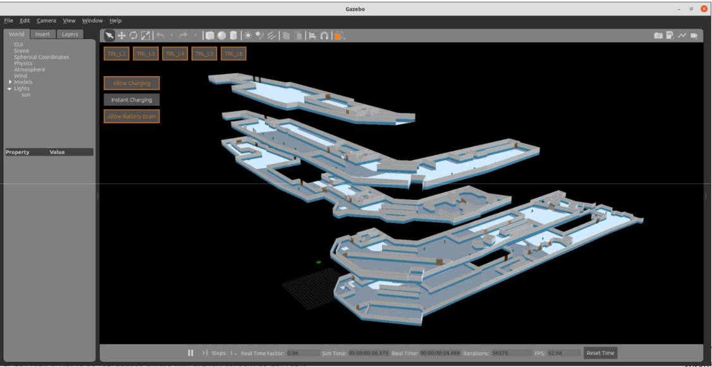
Design Efforts
Design Efforts / Document tree
- RMF BMS Systems Integrator (HT)
- Lift acceptance test plan - from OEM
- Lift PLC + lift acceptance test plan (include fire safety, PLC-UPS design), ICD
- Lift PLC to Edge Computer test plan and IRS
- Door PLC + Door acceptance test plan (include fire safety, PLC-UPS design)
- Door PLC to Edge Computer test plan and IRS
- Wireless Charger standardized docking test plan and IRS
- Overall RMF integrator (HT + Govtech)
- Hazards and Risk analysis document, Risk Management Plan
- Platform Safety
- Operational Safety (ie: Fire safety)
- Building Wiring ICD
- Network HDD and ICD
- Overall SSS, Systems design document
- Nominal case test plan (AMR vendors, basic 4 scenarios)
- Extended test plan (4 scenarios + emergency scenarios, Monte Carlo testing)
- Testing and commissioning plan
- With ROS-Gazebo software in the loop (SwIL), SwTP for verification and validation
- On Site Acceptance Test (OSAT)
- Hazards and Risk analysis document, Risk Management Plan
- RMF Core integrator (OSRC + Senserbot)
-RMF core cloud deployment SSS, Systems Design Document
- RMF to BMS “cloud to cloud” test plan and IRS
- Cybersecurity Risk Assessment (IM8, AIAS) & development plan
- Software Quality (ie: Parasoft C++) where applicable
- Aurora-Caato developer (Senserbot + I2R + Govtech)
- RMF Nominal + I2R integration requirements
- AMR Vendors (Lionsbot? Gaussian..?)
- RMF Nominal case integration requirements (to be discussed)
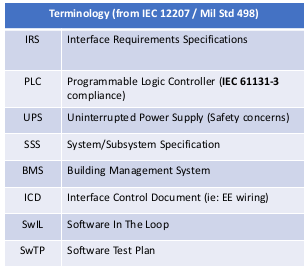
Design Efforts / Documentation Goals:
- Identify updated type "C" requirements (ie: complimentary to ISO-
13482 as an operational standard) covering indoor buildings and
RMF-like system
- *Complimentary to I2R efforts to update ISO/TC299, ISO/CD 18646-2
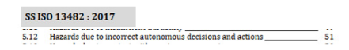
- Update to IMDA AMR guidelines (ie: Govt Playbook)
Platform standards
Overview of platform standards
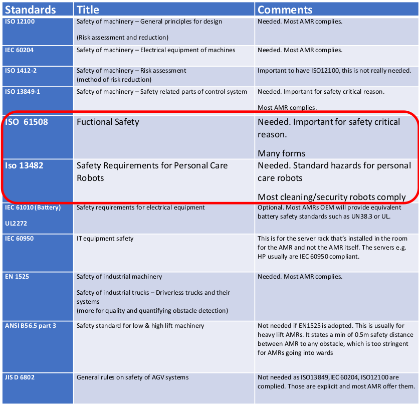
Overview of operational standards
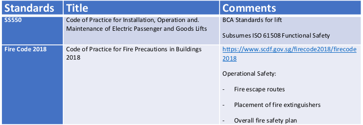
AMR Specific Platform Standards
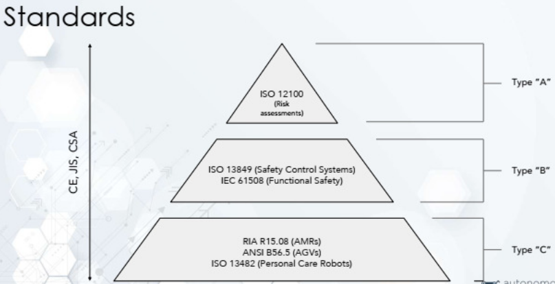

Risk Assessment
Many forms of Functional Safety (IEC 61508)
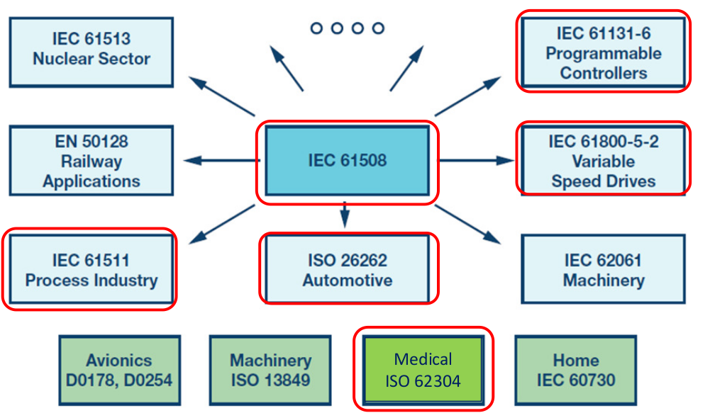
Approach to Risk Assessment & Hazards Analysis
- Classifications (Mix of IEC 62304 and IEC 61508 SIL definitions):
- Class A: No injury or damage to health is possible.
- Class B: Injury is possible, but not serious.
- Class C: Death or serious injury is possible.
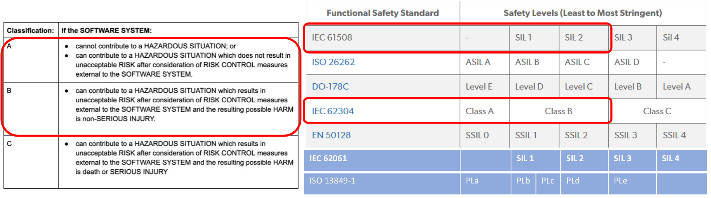
Approach to Software Systems Safety (ISO 62304)
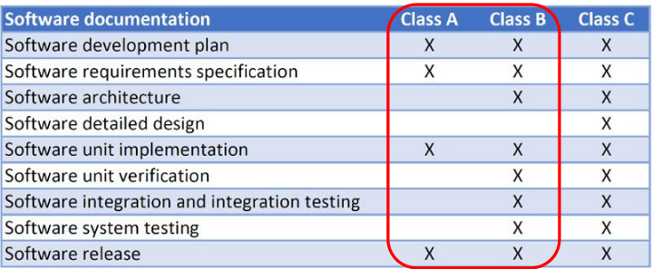
Difference in Class
Class B
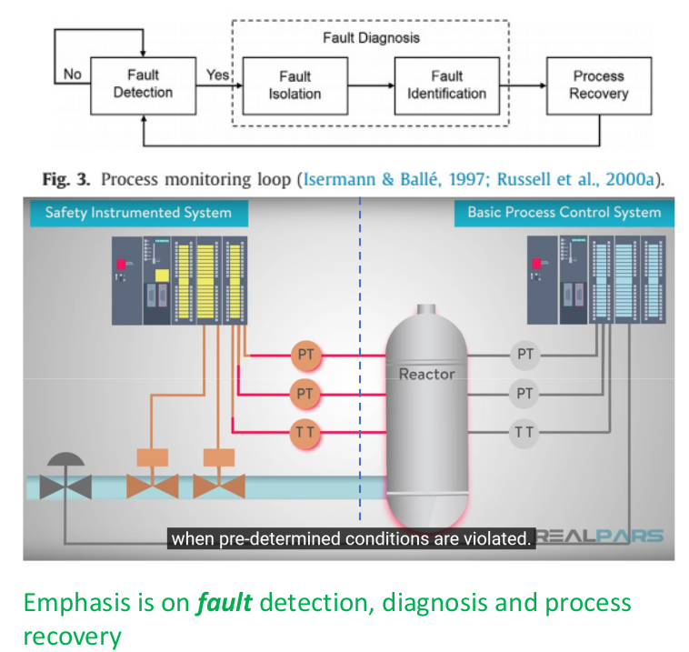
VS Class C/ Lvl A/ SIL 4
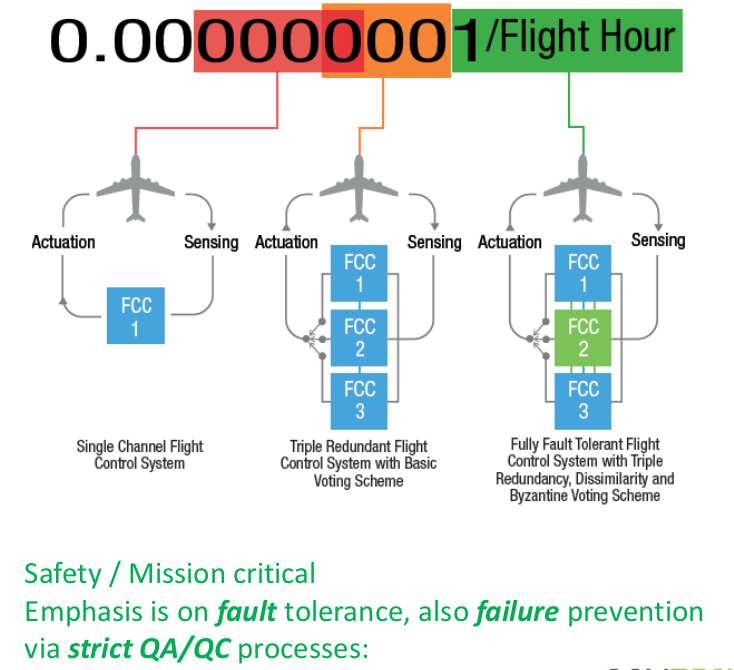
Terms of Reference
- A disturbance/error is an unknown and uncontrolled input acting on a system.
- A fault is an unpermitted deviation of at least one characteristic property or parameter of the system from the acceptable/usual/standard operating conditions.
- A failure is a permanent interruption of a system’s ability to perform a required function under specified operating conditions.
- Traditional control systems are designed to return the system to normal operations in the presence of disturbances but not in the presence of faults or failures.
- Fault-tolerant control (FTC) systems refer to control systems that have been designed to explicitly account for some class of specified faults in the closed-loop system. FTC systems must act in the time between a fault and a system failure.
The Nature of Accidents
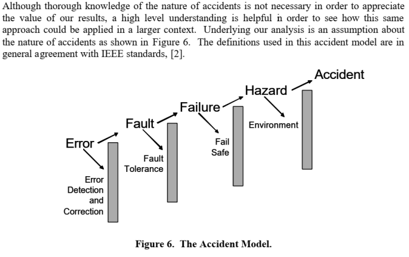
Identified Hazards
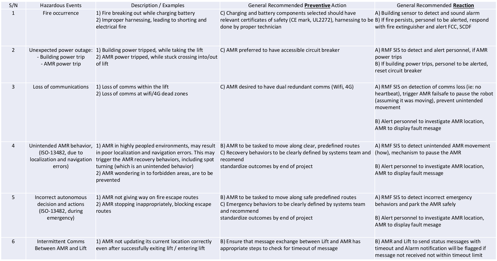
Systems Test Plan
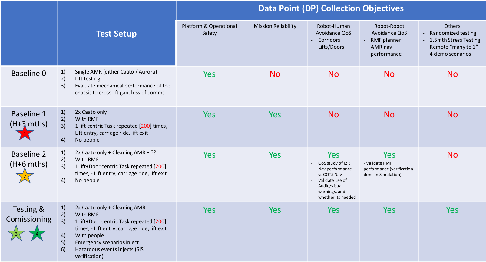
Roles & Responsibilities
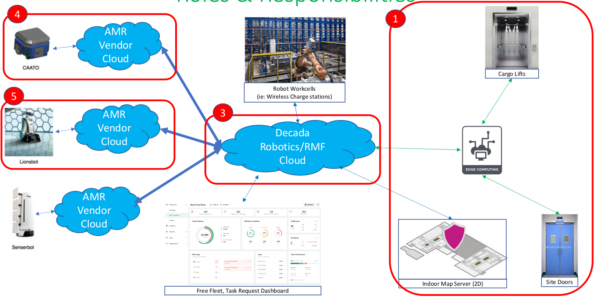
Project Risks
- Senserbot Aurora
- Current Aurora (Robotnik) not designed for unsupervised operations via RMF
- Loaned Aurora units from PRL, to be assessed for clearing cargo lift gaps (40mm x 10mm)
- Senserbot in process of adopting Caato AMR design, may need some time to complete the transition after the project
- Standard interfaces and AMR behavior
- AMR Vendors have expressed unwillingness to make changes to existing product lines, especially to hardware
- This will result in difficulty to standardize mapping services and docking behaviors
- Current assessment
- Moderate project risks (leading to subsequent operationalization)
- Low technical risks
Ethernet wiring diagram at TRL

Wiring Requiurements
- Lvl B1 – x1 Eth Port (no auto doors, 1 for spare)
- Lvl 2-5 – x2 Eth Port each (1 for door, 1 for spare)
- Lvl 6 – x4 Eth Port (1 for door, 1 for spare)
- (Lift PLC to have x2 lan cables for redundancy)
Wireless charger to deploy at level 4 and 6
Level 6

Level 4

Trunking switch to Server room

Server room